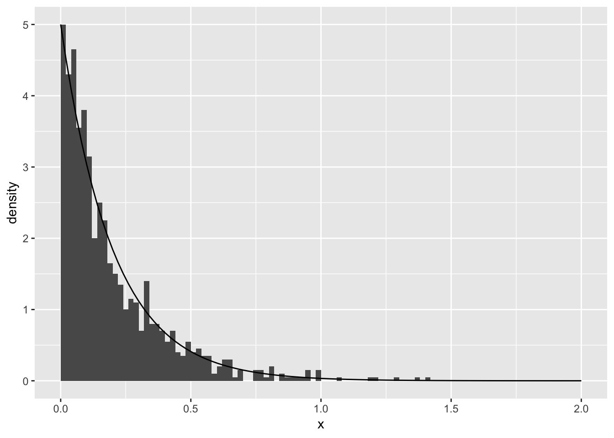

What questions do you have?
Experience with R:
| comfortable | copy/edit | never used |
|---|---|---|
| 9 | 10 | 1 |
| tool | never used it | not comfortable | comfortable |
|---|---|---|---|
| rmarkdown | 4 | 5 | 11 |
for |
5 | 5 | 10 |
apply() |
6 | 7 | 7 |
| git | 11 | 7 | 2 |
x <- c(1, 2, 3, 4)
y <- c(0, 1)
z <- c("a", "b", "c", "d")| Code | Percent Correct | Correct Answer |
|---|---|---|
z[2] |
100 | "b" |
x <- y; x |
90 | 0 1 |
x < 4 |
90 | TRUE TRUE FALSE FALSE |
z[x<2] |
65 | "a" |
x + y |
30 | 1 3 3 5 |
z[-2] |
30 | "a" "c" "d" |
Office hours:
Open an Issue in the Discussion Repo…more in lab/homework
Simulation is a way to explore the properties of a random variable, e.g.:
But, we have to be able to simulate a random variable!
This week: methods for simulating random variables.
Next week: what can you do with those simulations…
If we could simulate a Uniform(0, 1) there are methods we can use to get other distributions.
Today:
How to simulate from a Uniform(0, 1).
One way to use a Uniform(0, 1) to simulate from another distribution: inverse transform method
What makes code “good”?
Sometimes (like last Thursday), I’ll provide an entire project for our work in lecture. You will log in to rstudio.cloud, find it and copy it.
Sometimes, I’ll just work from the lecture notes:
I’ll always re-Knit (with results included), and re-post the lecture after class.
In R runif() produces random draws from a Uniform(0, 1) distribution, and relies on a pseudo-random number generator.
runif(n = 10)## [1] 0.62560231 0.20937990 0.56192565 0.97749120 0.22372223 0.93932038
## [7] 0.05197818 0.68125187 0.12644383 0.26086237The first argument n controls how many numbers are drawn.
You read about one pseudo-random number generator, the Multiplicative congruential method.
(runif() uses a more complicated generator, but the principle is the same.)
It’s a deterministic algorithm.
It’s recursive, uses a seed (first number), it’s cyclic (numbers will eventually repeat). Seed, based on the time now?
No. We don’t have the same seed. (But assuming we are all using the same R version the default generator and its parameters will be the same.)
Try it:
runif(n = 10)## [1] 0.19864771 0.21836967 0.04316548 0.40640229 0.38366313 0.59268709
## [7] 0.39088686 0.99415652 0.11175616 0.99309092The seed is the first number used to start the generating sequence (\(x_0\) in the reading).
Two ways to get a seed:
Create an unpredictable one when needed:
Initially, there is no seed; a new one is created from the current time and the process ID when one is required. Hence different sessions will give different simulation results, by default.
– from ?Random
Set a specific one to ensure the same sequence. Good for: debugging, comparing to someone else, removing sampling variability. In R: set.seed(seed), where seed is some integer.
Will the code in these two chunks give the same 20 random numbers? Guess, then try it.
set.seed(1871)
x <- runif(10)
y <- runif(10)
(unif_1 <- c(x, y))## [1] 0.44482382 0.46826211 0.11013158 0.33573747 0.31285982 0.15742834
## [7] 0.90300484 0.59244524 0.47035439 0.50336048 0.99857384 0.84269130
## [13] 0.22613531 0.06823719 0.92291775 0.35295546 0.24142579 0.33392353
## [19] 0.56343514 0.50514421set.seed(1871)
(unif_2 <- runif(20))## [1] 0.44482382 0.46826211 0.11013158 0.33573747 0.31285982 0.15742834
## [7] 0.90300484 0.59244524 0.47035439 0.50336048 0.99857384 0.84269130
## [13] 0.22613531 0.06823719 0.92291775 0.35295546 0.24142579 0.33392353
## [19] 0.56343514 0.50514421(How could we check with code?)
all(unif_1 == unif_2) # OK here, dangerous in general because of floating point error## [1] TRUEall.equal(unif_1, unif_2) # Gives more info if not TRUE## [1] TRUEMost programming languages use a deterministic process to get numbers that appear random.
These sequences depend on an initial state, known as a seed. If you start from the same seed (with the same generator) you will get exactly the same sequence of random numbers.
R keeps track of the state of the sequence for you. You can set the seed with set.seed() if you want the sequence to be reproducible.
Unanswered questions:
?Random. How does it work?@8:36am
A method for generating a sample from a stated distribution, by using a sample from a Uniform(0, 1).
Relies on inverting the cumulative distribution function.
So, you need to have a form for the CDF and be able to invert it.
To generate a sample, \(X\), with cumulative distribution function (cdf) \(F(x)\):
Add sketch here
We are generating a quantile at random, and using the inverse CDF to translate the quantile back to the support of the CDF.
Goal: Draw a sample from Exponential(\(\lambda\)).
If \(X \sim Exp(\lambda)\), \[ F(x) = 1- e^{-\lambda x} \]
Invert the CDF, let \(x = F^{-1}(u)\) \[ u = 1 - e^{-\lambda x} \\ (1 - u) = e^{-\lambda x} \\ \log(1-u) = -\lambda x \\ F^{-1}(u) = x = -\frac{1}{\lambda} \log(1-u) \]
To simulate \(X \sim Exp(\lambda)\):
u <- runif(1)
lambda <- 5
(x <- -1 / lambda * log(1 - u))## [1] 0.03831972How can we check this is working?
Generate many and plot.
Edit to generate 1000 samples from Exponential(\(\lambda\)):
u <- runif(n = 1000)
lambda <- 5
x <- -1 / lambda * log(1 - u)library(ggplot2)
ggplot(mapping = aes(x = x)) +
geom_histogram(aes(y = stat(density)),
binwidth = 0.02, center = 0.01) +
stat_function(fun = dexp, args = list(rate = lambda)) +
xlim(0, 2)
(back at 9:01am)
\[ \begin{aligned} P(X = 1) &= \pi \\ P(X = 0) &= 1 - \pi \end{aligned} \]
Application of the inverse CDF method, to simulate \(X\):
(See Ross 4.1 for more details)
Game plan: three different implementations, compare and contrast.
A literal translation:
pi <- 0.4
(u <- runif(1))## [1] 0.4196467if(u < pi){
x <- 1
} else {
x <- 0
}
x## [1] 0Can you edit to sample 1000 numbers from Bernoulli(0.4)?
No, the condition inside if() is interpreted as a length 1 logical:
pi <- 0.4
u <- runif(1000) # this doesn't work
if(u < pi){
x <- 1
} else {
x <- 0
}## Warning in if (u < pi) {: the condition has length > 1 and only the first
## element will be usedx## [1] 0Use subsetting instead:
x to be 0u is less than pi, set x to 1.pi <- 0.4
u <- runif(1000)
x <- double(1000)
x[u < pi] <- 1Can you edit to sample 1000 numbers from Bernoulli(0.4)?
Pick up here Thursday
?ifelse
ifelsereturns a value with the same shape astestwhich is filled with elements selected from eitheryesornodepending on whether the element oftestisTRUEorFALSE.
u <- runif(1000)
pi <- 0.4
x <- ifelse(u < pi, 1, 0)Use built in function:
pi <- 0.4
x <- rbinom(n = 1000, size = 1, prob = pi)We have a few implementations:
# 1
if(u < pi){
x <- 1
} else {
x <- 0
}
x# 2
x <- 0
x[u < pi] <- 1# 2.5
x <- ifelse(u < pi, 1, 0)# 3
x <- rbinom(n = 1000, size = 1, prob = pi)# 4 an addition
x <- 1
x[u < pi] <- 0# 5 a student solution
as.numeric(u < pi)How do we judge which code is best? What are the advantages/disadvantages of each implementation?
What makes code good?